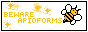
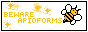

yourfriend's silly website
about me
I'm Latvian. I use any pronouns, and you can refer to me by "friend" or "yourfriend". :) I also love strawberries🍓, watermelons🍉, blueberries🫐 and pears🍐.
programming / development
I use TS/JS and C#. I do small webdev projects from time to time like this. I also write backend servers for many games. I generally am most comfromtable using Deno and C#. I also have no issue working with C or Python.
gaming
I currently mostly play Switchcraft3 (minecraft modpack + server). I also play some indie games like Pizza Tower, Terraria, and some others. I also administrate the game MultiPlayerPiano, which is a quite active piano game with a chat that's horrible to moderate.
contact
Discord: @cesis
Github: @yourfriendoss
Telegram: @y0urfr1end
 
